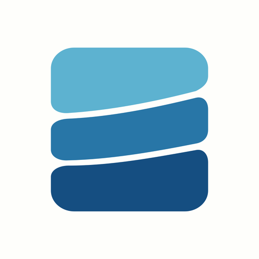
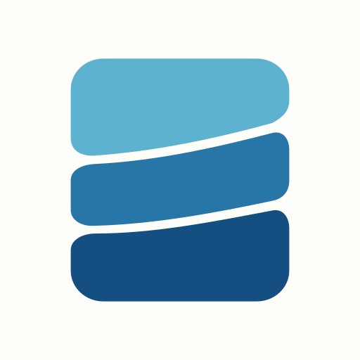
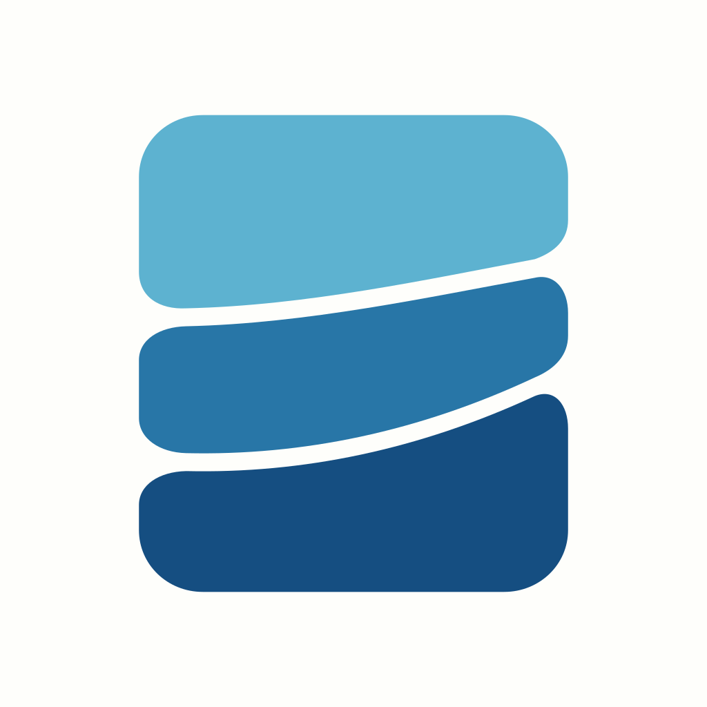
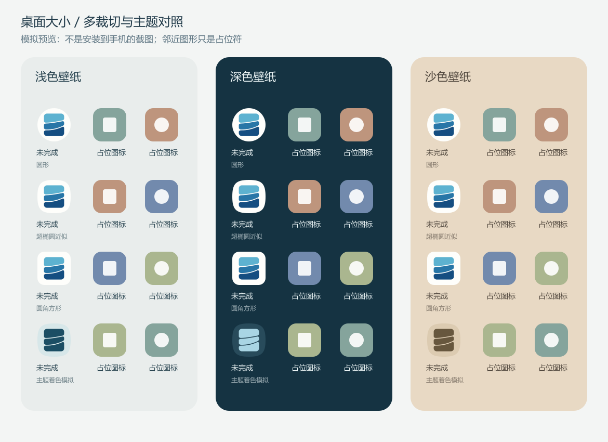
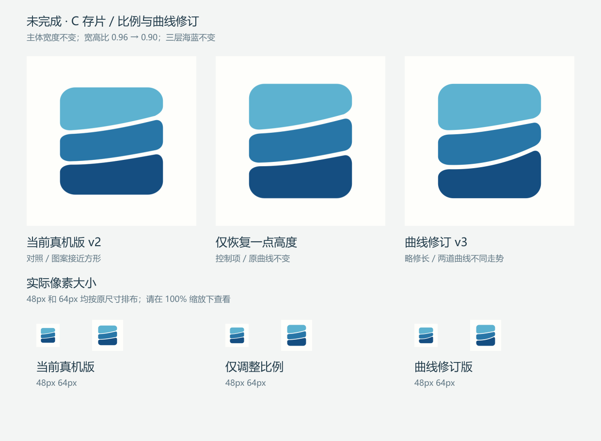
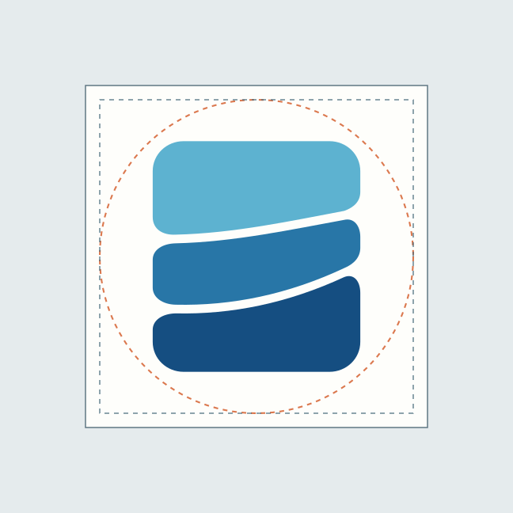

未完成 · C 存片 / 曲线修订 v3
三片、三层海蓝和左右对齐不变。保持当前真机版宽度，恢复少量高度；上间隙舒展，下间隙在右侧更明显地上扬。

宽高比 0.96∶1，用作对照；这里显示资源，不是真机截图。

宽度不变，高度增加约 6.7%；原来的两道曲线不变。

宽高比 0.90∶1；两道曲线有不同走势，而非平行切分。
先看桌面大小
以下按 48px / 64px 原尺寸显示。请使用 100% 页面缩放；浏览器像素不等于所有手机的实际图标尺寸。
当前真机版
48 / 64px
48 / 64px
曲线修订版
48 / 64px
48 / 64px
单色修订版
48 / 64px
48 / 64px
裁切与背景对照
模拟预览，不是真机截图；邻近图形为占位符，超椭圆为近似形状。彩色与单色使用同一套曲线。

前后对照总览

保留的三层海蓝
浅水中水深水
候选资源与检查
可编辑形状 · 自适应主文件 · 单色层 · 几何检查 · 资源检查 · 修改说明


下图为检查线框，不会出现在图标中。候选 Android 资源只保存在本目录的 android-candidate/res/，未接入 App。

本轮改善的是比例和曲线，不把它宣告为定稿，也未验证陌生用户能否判断产品类别或认出“未完成”。当前两台手机仍使用已安装的 v2。